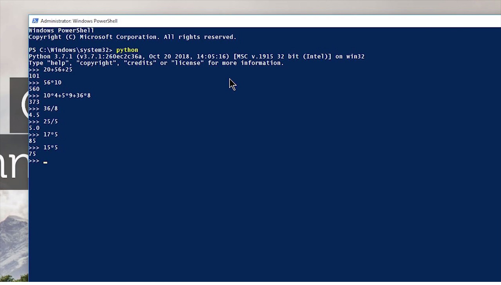

Python Complete Course - Beginner To Expert
What Is Programming and Why Python?
Guido Van Rossum created the Python Programming language in February 1991. Python is an interpreted, high-level, general-purpose programming language.
Python allows us to create a game, build web apps, do general-purpose scripting, etc.
Before we dive into the details of Python, let's understand what the term Programming or Coding means?
Programming helps human beings to reduce hours of manual effort.
In today's era, demand for programming is growing rapidly; i.e., there is a huge need for software
developers and programmers in IT (Tech) Industries.
To write code in any language, we need a friendly platform where we can write the code and can execute
it. For this, we use IDEs.
IDE – An IDE (Integrated Development Environment) is a software application that provides many
comprehensive facilities to programmers for software or application development.
Python is used by many of the best tech companies. A few of those companies are:
So, this was a quick introduction to the Python programming language. In the next Video, we will see how to download and Install Pycharm. I will be covering all essential concepts of Python in this course for absolutely free, therefore, please share this course with your friends and family also.
Downloading Python And Installing Pycharm
In this tutorial, we'll download and install Python as well as an IDE called PyCharm. First of all, let's head to Python's official website and download Python:
- Go to this link - https://www.python.org/downloads/.
- From the above link, download the latest version of Python.
- After visiting this link, click on the "Download Python" button.
- Your download will start as soon as you click the button.
Nice! You can run the installer and install Python. Now, let's download the Pycharm IDE. But what is Pycharm, and why do we need it?
Pycharm is one of the best Integrated Development Environments (IDEs) for Python Language developed by the Czech company JetBrains. To download Pycharm, follow the steps below:
- Go to this link - https://www.jetbrains.com/pycharm/download/#section=windows.
- After visiting the above link, download the community version of Pycharm.
- Click on the community button to download it.
- Your download will start.
After that, install it like any other software. After installing both Python and Pycharm, open the terminal (Powershell), and then type 'python' and press Enter.
You should see the output like this.

Then Install Pycharm like any other software and do not make any changes while installing it.
And that's all! You have your Python + Pycharm installed on your computer. I hope you enjoyed this tutorial. In the upcoming tutorial, we will study about the pip and modules in Python.
Using Modules And PIP In Python
Sometimes we have to use someone else's code in our program because it saves us a lot of time. Today, we will learn a technique to use code that is not written by us but will enhance the quality of our program, save us time and energy, and of course, it is legal and free.
Let us understand what utilities like modules and pip are,
Module – Module or library is a file that contains definitions of several functions, classes, variables, etc., which is written by someone else for us to use.
Pip – Pip is a package manager for Python, i.e., pip command can be used to download any external module in Python. It is something that helps us to get code written by someone else.
We can install a module in our system by using the pip command :
- Open cmd or Powershell in your system.
- And then, type pip install module_name and press enter.
- Once you do that, the module will start downloading and will install automatically on your computer.
For example, for installing flask, I will do this:

After pressing the enter key, you will see something like this:

After installing any module in Python, you can import it into your Python program. For example, I will type "import flask" at the top of my Python program to use the flask.
import flaskThere are two types of modules in Python:
-
Built-in Modules:
Built-in modules are pre-installed in Python, i.e., there is no need to download them. These modules come with the python interpreter itself. For example– random, os, etc.
To get a complete list of built-in modules of python, head over to the following page of the official documentation - https://docs.python.org/3/py-modindex.html.
-
External Modules:
These are the modules that are not pre-installed in Python, i.e., we need to download them before using them in our program. For example:– Flask, Pandas, TensorFlow, etc.
Writing Our First Python Program
Open Pycharm and create a new file in it.
Keep in mind the file name should not match any module name.
After creating a new file, type:
print('Hello World!')Now run your program.
You will get the output as "Hello World" in your terminal.
So, this is our first python program, and in this program, we just used the print function. In this function, whatever we pass in parenthesis () in a double quote or single quote gets printed (as it is) in the terminal.
Using Python As A Calculator
First of all, I would like to tell you one thing - the main motive of using Python is not to do raw calculations. You will perhaps never use python to calculate 3+8 or 34*232, for that matter.
Yeah, that’s true! Python is not just limited to do calculations. It has a vast number of uses and has many merits or advantages. Using Python, you can do most of the things, such as creating games, apps, software, websites, etc.
When you type python, you are inside an interactive python shell where you can type anything, and the value is displayed on the screen after the computation. That's how you can use python as a calculator. 
Comments, Escape Sequences & Print Statement
Comments are used to write something which the programmer does not want to execute. Comments can be written to mark the author's name, date when the program is written, adding notes for your future self, etc.
There are two types of comments in Python Programming Language
Single Line Comment: Single Line comments are the comments which are written in a single line, i.e., they occupy the space of a single line.
import os
# This a Inline Comment
print('Main Code Here')
# Now I Will Write my main code here:
print(os.listdir())
Multi Line Comments: Multi-Line comments are the comments which are created by using multiple lines, i.e., they occupy more than one line in a program.
import os
'''This Is A Comment
Author: Kavya Sahai
Date: 21-07-2022
Organisation: Educatque'''
print(os.listdir())
Python Print() Statement
print() is a function in Python that allows us to display whatever is written inside it. In case an operation is supplied to print, the value of the expression after the evaluation is printed in the terminal. For example,
print('Kavya Is The Best')
print('88 + 9')
End: end argument allows us to put something at the end of the line after it is printed. In simple words, it allows us to continue the line with " " or ',' or anything we want to put inside these quotes of the end.
It simply joins two different print statements using some string or even by space. Example:
print('Kavya Is The Best', end='in his dreams')
Escape Sequence
Variable:
A variable is a name given to any storage area or memory location in a program.
In simple words, we can say that a variable is a container that contains some information, and whenever we need that information, we use the name of that container to access it. Let's create a variable:
a = 32
b = 28.69
Here a and b are variables, and we can use a to access 34 and b to access 23.2. We can also overwrite the values in a and b.
Data Types in Python:
Primarily there are the following data types in Python.
Integers (< class 'int'>): Used to store integers
Floating point numbers (< class 'float'>): Used to store decimal or floating-point numbers
Strings (< class 'str'>): Used to store strings
Booleans (<class 'bool'>): Used to store True/False type values
None: None is literal to describe 'Nothing' in Python
String Slicing And Other Fucntions In Python
The string is a data type in Python. Strings in Python programming language are arrays of bytes representing a sequence of characters. In simple terms, Strings are the combination or collection of characters enclosed in quotes. Strings are one of the most used data types in any programming language because most of the real-world data such as name, address, or any sequence which contains alphanumeric characters are mostly of type ‘String’.
Primarily, you will find three types of strings in Python :
Let us now look into some functions you will use to manipulate or perform operations on strings.
len() Function : This len() function returns the total no. of characters in a string. E.g., for string a="abc", len(a) will return three as the output as it is a string variable containing 3 characters
E.g., Consider this string variable x